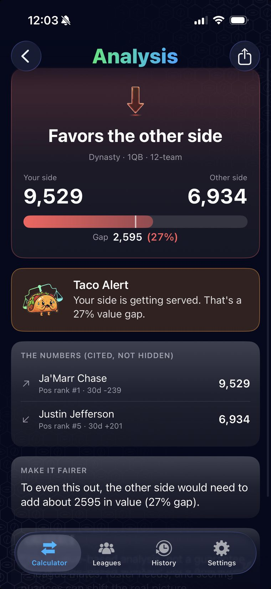
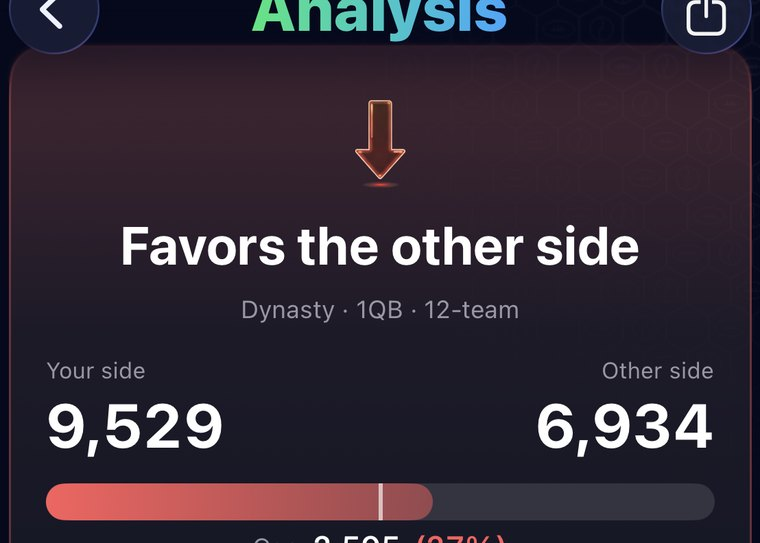
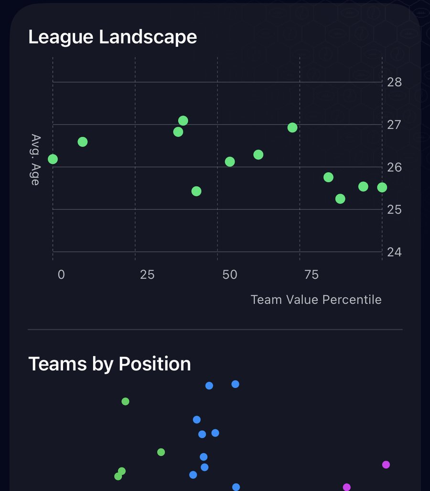
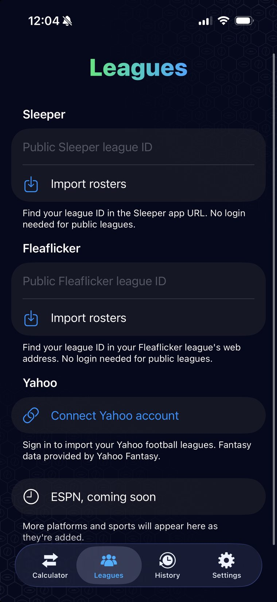
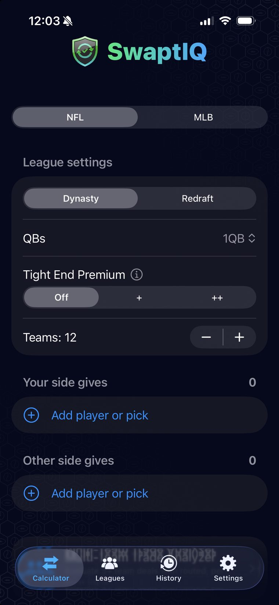

Know who's really winning the trade.
SwaptIQ connects to your Sleeper, Yahoo, or Fleaflicker league, pulls real crowdsourced trade values, and gives you a plain-English breakdown you can actually see the reasoning behind. No black box.
Free to start · iPhone & iPad · Sleeper, Yahoo & Fleaflicker leagues supported (Yahoo: US & Canada)

Built for managers who trade a lot
Your league platform doesn't tell you if a trade is fair. SwaptIQ does, with the receipts.
Trade breakdown in plain English
A clear verdict on value balance, positional need, and roster fit, with the exact numbers it used shown right underneath and an honest confidence caveat every time.

Sleeper, Yahoo & Fleaflicker sync
Enter a public Sleeper or Fleaflicker league ID, or sign in with Yahoo, and SwaptIQ pulls your rosters, players, and photos automatically. No manual entry.
Real trade values
Every player and pick is priced using industry-trusted dynasty value data, cited directly instead of hidden behind a proprietary score.
Multi-team trades
Route picks and players across three or more teams and see how the deal shakes out for everyone involved, not just the two sides you started with.
League-aware values
Superflex or 1QB, dynasty or redraft, TE premium or standard. SwaptIQ adjusts every value to match your league's actual settings.
League power rankings
Every team ranked by total roster value, with a per-position breakdown, a league-wide value and age landscape, and current draft-pick value factored in for Sleeper and Fleaflicker leagues.

Trade history
Every evaluated trade is saved to your account so you can revisit it, compare it, and favorite the ones that mattered.
Fantasy baseball too
Switch to MLB and price a baseball trade the same way, using rest-of-season value built from official league data. Players are added by search, so any league format works.
From league sync to verdict in under a minute
Three steps, no spreadsheets, no arguing in the group chat.
Connect your league
Drop in your Sleeper or Fleaflicker league ID, or sign in with Yahoo. Either way your rosters are ready in seconds. Building an MLB trade? Just search for the players.

Build the trade
Set your league format, then pick the players and picks on each side. Live values and photos show up as you build it.

Get the verdict
See the value gap, the reasoning behind it, and the underlying numbers it used, all on one screen.
Stop guessing who won the trade.
SwaptIQ is available now for iPhone and iPad.
Have questions first? Visit Support.